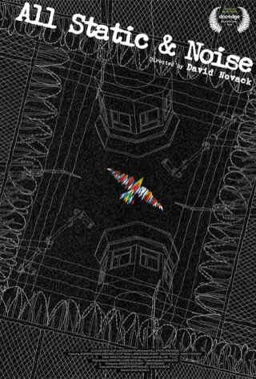

About the film

THE PEOPLE’S REPUBLIC OF DESIRE dives deep into world of young stars of live streaming in China, where the shift to a virtual life in place of flesh-and-blood relationships has gone far. The stars build followings among the rich and poor, with the rich lavishing online personalities with gifts worth millions of dollars, and the poor cheering the wealthy patrons on and rooting for their idols. The scene culminates with a once-a-year competition, a cross between the Hunger Games and Black Mirror, in which the winner is the one whose patrons buy the most votes.
At the festival
- 2018 Sunday, October 14, 2018 · 1:45 PM · Naval Heritage CenterPost-screening discussion with director Hao Wu.
More films on these topics
 We Bloom in Spring2025 · 19 min
We Bloom in Spring2025 · 19 min Dust to DustKôsai Sekine2024 · 89 min
Dust to DustKôsai Sekine2024 · 89 min Mistress DispellerElizabeth Lo2024 · 94 min
Mistress DispellerElizabeth Lo2024 · 94 min
All Static & NoiseDavid Novack2023 · 102 min The GrabGabriela Cowperthwaite2022 · 104 min
The GrabGabriela Cowperthwaite2022 · 104 min Myanmar DiariesThe Myanmar Film Collective2022 · 70 min
Myanmar DiariesThe Myanmar Film Collective2022 · 70 min